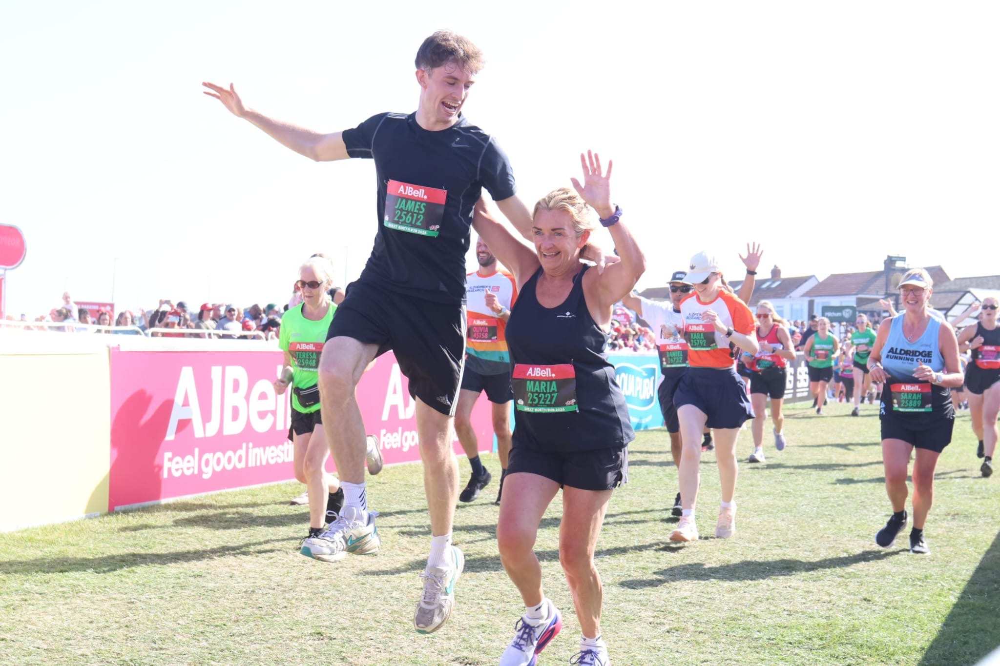

Pilot-scale wastewater treatment
Dissertation: 70%
MSc research completed in collaboration with Northumbrian Water, investigating immobilised microalgae biocomposites for nutrient removal from treated wastewater.
I recently completed my MSc in Sustainable Chemical Engineering at Newcastle University with Distinction and was awarded the 2025/26 Exemplary Performance Prize for outstanding performance throughout the programme. I also completed my BEng (Hons) in Chemical Engineering at Newcastle. I’m continuing my own independent research into water treatment, environmental engineering and industrial decarbonisation because I’m fascinated by how engineering can tackle climate change and build resilience for the future. Alongside this, I supervise and train staff at Leonardo Hotels, raise money for Cancer Research UK and seek graduate opportunities.
2025/26 Exemplary Performance PrizeCancer Research UK
I’m raising money in memory of family members and friends lost to cancer. Throughout November, I’m hosting charity bake sales at work and taking on Scafell Pike with friends. Ben Nevis and Snowdon are planned for spring 2027, along with further fundraising events, before I complete the 2027 Great North Run for Cancer Research UK.

Water · Energy · Industry
I’m developing my own research-led writing on environmental and sustainability engineering, starting with the carbon cost of AI data centres. I’ll share finished, referenced articles when they are ready.
Selected work
Dissertation: 70%
MSc research completed in collaboration with Northumbrian Water, investigating immobilised microalgae biocomposites for nutrient removal from treated wastewater.
Project mark: 77.5%
Process design combining mass and energy balances, heat integration, carbon reduction and techno-economic assessment.
Project mark: 77%
Process design covering absorption, stripping, compression, HAZOP, material selection and cost estimation.
My MSc strengthened my interest in engineering and sustainability challenges that need new solutions. I’m fascinated by water scarcity, pollution and the changes needed to reduce industrial emissions, and want to understand how engineering, planning and policy can help.
I’m continuing to read and develop articles on these issues alongside my hospitality job and applications for graduate roles. I want to keep learning about technologies and ideas that could improve water treatment, support climate resilience and reduce emissions.
About
My BEng in Chemical Engineering gave me a strong foundation in process design, thermodynamics and safety. Balancing university work with football, social commitments and regular hospitality shifts was difficult, however, and I was disappointed with my final undergraduate result. Before returning for an MSc, I saved as much as I could and made a conscious decision to organise my time differently and put more into my studies.
I still worked substantial hours throughout my MSc. Around the winter exams, I sometimes worked 30–40 hours a week, spending days off in the library and often heading there after early shifts or straight to work after lectures. I made arrangements with my manager to protect teaching time and exams, kept lecturers informed when shifts occasionally clashed, and completed material and tutorial questions in advance. It was tiring, but I became more confident, engaged and proactive in how I learned.
At Leonardo Hotels, I trained new colleagues, led trial shifts and took responsibility for tour-group service, coordinating meals, staff and guest requests alongside the kitchen and other departments. During my dissertation, I sometimes travelled back from Northumbrian Water’s Bran Sands treatment works, changed and went directly into an evening shift. I value the relationships I have built at work and the feedback from guests. The responsibility and communication skills I developed there also helped me contribute more actively in lectures.
What motivated me most was how much I cared about the course. I enjoyed understanding the technologies, environmental impacts and policies behind cleaner industry and more resilient water systems. Working with technicians, researchers, engineers and Northumbrian Water staff during my dissertation showed me how much there is to learn from people in practice. Achieving my MSc Distinction and receiving the Exemplary Performance Prize made all that effort especially rewarding. I’m excited to apply what I have learned and keep developing my skills in environmental and sustainability engineering.
Academic recognition · 2025/26
Awarded by Newcastle University’s School of Engineering for outstanding performance throughout the MSc Sustainable Chemical Engineering programme.
MSc Sustainable Chemical Engineering · Distinction · Dissertation: 70%